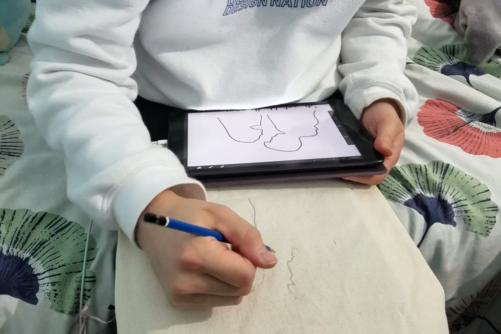
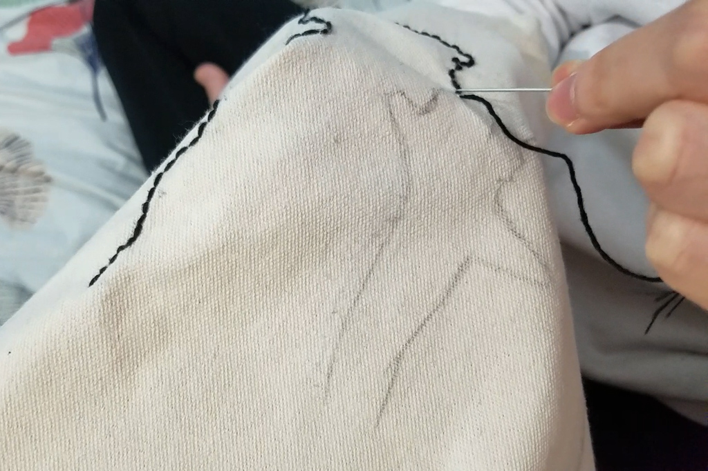
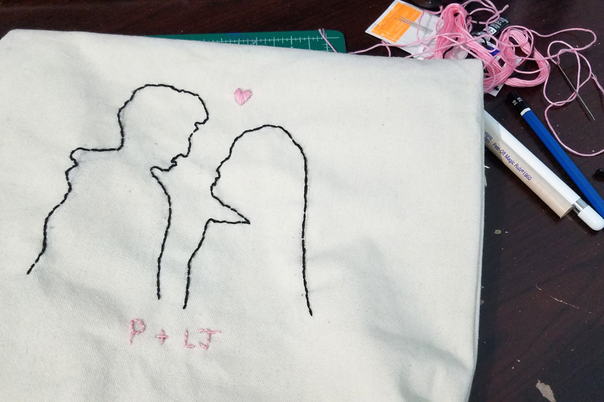

Embroidering a Tote Bag
Feb 18 - Written by Emily
Inspired by the release of the final movie in the To All the Boys I’ve Loved Before Series, I decided to DIY something based on the series.
With so many DIY options to choose from, I settled on embroidering a plain tote bag I have. Now, I have never embroidered anything before nor do I have all the recommended materials, but I chose to try it out anyways to show you that you can embroider without an embroidery hoop.
Unlike many prior DIYs I have done in the past, I decided to plan this one out first by sketching out my design in Procreate before then sketching it out on my canvas tote bag. Now something I quickly learned was that one cannot easily erase on canvas so if you are going to try this out, be aware of that before you start. I think a good alternative to that is to print out your design and then secure the paper to the tote bag or whatever fabric you are using. That way, your design will look the way you want it and you won't have to deal with all the unwanted pencil lines.
Before I started this project, I did skim through a tutorial or two on embroidery so that I wouldn’t be completely winging it. So, when it came time to start embroidering, this seemed to be going okay until I somehow tangled up all of my thread inside of my tote bag and had to cut it off. I luckily didn’t have to completely start over though it wouldn’t have been the worst since I had only just begun sewing.
After embroidering for a while, I soon realized how time consuming this project was. It’s quite fun and relaxing but it will definitely take you awhile to embroider and I was only doing a very simple design.
A few hours later, I finally finished the silhouette of Peter and Lara Jean and it looked decent. You could tell that they were people but in my opinion, they could have looked more like the characters in the movie. I did mess up Peter’s face so that definitely played a role in how they looked but overall, I’d blame my poor human drawing skills for that.
I originally planned to write a quote below the silhouette but because it took me so long to just do that half, I didn’t want to have to embroider out a super long quote. So, I pivoted and changed the design by just writing out “P+LJ” below the silhouette and adding a little heart between them.
Overall, I think it turned out pretty well for a first attempt and not having all the appropriate materials. There are some things that could have been better if I had planned this out more but I wouldn’t consider this a fail. I know I definitely want to try a few other embroidery projects in the future and hopefully by then, I’ll have all the right tools to work with.